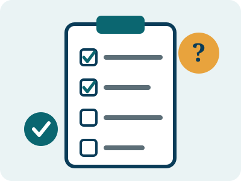

Guia prático
Teste, pratique e aprofunde
Use o checklist para avaliar este próprio portal com o teclado, o zoom e os ajustes de leitura. Depois, revise os conceitos no quiz e consulte as referências para continuar estudando.

Checklist de avaliação do site
Faça cada teste e marque o item quando ele funcionar como descrito. O progresso aparece abaixo da lista e é anunciado para leitores de tela. As marcações ficam salvas neste navegador, então você pode continuar depois.
Quiz: revise os conceitos
São cinco perguntas de múltipla escolha. Responda todas e escolha “Corrigir respostas”. Você verá a correção e uma explicação para cada pergunta. Se faltar alguma resposta, uma mensagem indicará quais perguntas precisam ser respondidas.
Recursos de acessibilidade adotados
Estes são os recursos implementados no portal. As instruções de uso estão na seção Recursos de acessibilidade deste portal, na página inicial.
- HTML semântico com regiões de cabeçalho, navegação, conteúdo e rodapé.
- Um único título principal (
h1) por página e subtítulos em ordem. - Idioma declarado como português do Brasil e títulos de página específicos.
- Link “Pular para o conteúdo” no início de todas as páginas.
- Navegação completa por teclado, com indicador de foco visível.
- Página atual marcada no menu por estilo e por
aria-current. - Botões A−, A+ e Padrão, com valor exibido e mudança anunciada.
- Modo escuro e alto contraste com
aria-pressede preferência salva. - Menu móvel com botão nativo,
aria-expandede fechamento por Esc. - Cores escolhidas para contraste mínimo de 4,5:1 no texto.
- Layout responsivo sem rolagem horizontal a partir de 320 pixels.
- Ilustrações SVG locais com texto alternativo ou marcadas como decorativas.
- Formulários com
fieldset,legende rótulos associados. - Resultados dinâmicos anunciados com
role="status"ou movendo o foco. - Respeito à preferência do sistema por menos movimento.
- Funciona sem login, sem banco de dados e sem dependências externas.
O portal foi testado com ferramentas automáticas e manualmente, mas não passou por auditoria formal nem por testes com um grupo amplo de pessoas com deficiência. Por isso, não declaramos conformidade total com a WCAG 2.2 ou o eMAG.
Mapa do site
Referências e fontes confiáveis
Os textos deste portal são originais e resumem conceitos apresentados nas fontes abaixo. Todos os links levam a sites externos; os marcados como “em inglês” não têm versão oficial em português.
- eMAG 3.1 — Modelo de Acessibilidade em Governo Eletrônico (Governo Federal, emag.governoeletronico.gov.br)
- WCAG 2.2 — Diretrizes de Acessibilidade para Conteúdo Web, em inglês (W3C, w3.org)
- Referência rápida da WCAG 2.2, em inglês (W3C WAI, w3.org)
- Como avaliar a acessibilidade de sites, em inglês (W3C WAI, w3.org)
- Introdução à acessibilidade web, em inglês (W3C WAI, w3.org)
- Lei nº 13.146/2015 — Lei Brasileira de Inclusão da Pessoa com Deficiência (Planalto, planalto.gov.br)
- Lei nº 10.436/2002 — reconhecimento da Libras (Planalto, planalto.gov.br)
- Acessibilidade na documentação da MDN (Mozilla, developer.mozilla.org)
A norma ABNT NBR 9050, citada nos artigos sobre casa e cidade, trata da acessibilidade em edificações, mobiliário e espaços urbanos e pode ser consultada junto à Associação Brasileira de Normas Técnicas.